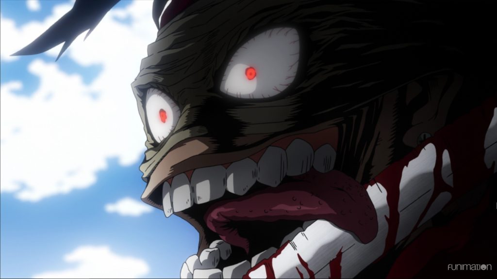

La segunda parte de Boku no Hero Academia 2 se viene más potente que nunca, y de a poco nos han ido revelando todos los nuevos componentes de estos esperados capítulos. Repasemos, ya han sido revelados los artistas encargados del nuevo opening y del nuevo ending de la serie, por un lado Amazarashi interpretará la nueva canción de apertura “Sora ni Utaeba” y por otro lado, LiSA se encargará de la canción de cierre “Datte Atashi no Hero”. También se ha dado a conocer la incorporación de nuevos seiyuus al casting y el diseño de los nuevos personajes
Noticia completa